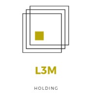

Rapport de stage
Introduction
J'ai effectué mon stage avec l'entreprise L3M Holding en télé-travail par la faute des conditions sanitaires actuelles.
L3M Holding est une entreprise qui développe des projets de start-up dans des domaines d'activités à forts potentiels.
Mon tuteur de stage s'appelle Rudy MASSELLA, il s'agit du leader de la branche Recherche & Développement de l'entreprise.
Projet de l'entreprise
Le projet de l'entreprise était de développer 3 sites webs :
Pour réaliser ce projet, 3 équipes ont collaborés : les développeurs, les testeurs et les designers.
Rudy Massela s'occupait aussi de discuter avec les clients pour ensuite nous transmettre leurs besoins.
Cadre du stage
Ma mission
Durant ce stage, j'ai pu faire partie de l'équipe des testeurs avec deux stagiaires : Ayman et Gibryl.
Notre mission était de réaliser des plans de tests pour chaque site ; c'est-à-dire simuler toutes les actions possibles d'un utilisateur et tout rédiger sur Excel en pensant à mettre à jour les plans de tests à chaque nouvelles fonctionnalités ou chaque nouvelles pages développées.
Suite à cela, nous devons effectuer les tests rédigés sur Excel manuellement (à partir du navigateur) ou automatiquement (en développant des scripts en Java avec Selenium WebDriver).
Enfin, nous devons aussi faire des rapports quotidiens ainsi que participer à la réunion quotidienne (Daily) pour exposer ce qu'on a fait ainsi que ce qu'on va faire.
Logiciels utilisés
- Selenium IDE : Il s'agit d'une extension de navigateur permettant de rejouer un scénario d'interactions.
- WebDriver : Il permet d'écrire des tests automatisés en différents langages (J'ai choisi Java). Il existe plusieurs drivers : GeckoDriver (Firefox), Chromium (Chrome), etc.
- Selenium Grid : Cela permet de tester la connexion de plusieurs utilisateurs en même temps.

Discord
Il s'agit de la plateforme utilisée pour communiquer, participer aux réunions, exposer les problèmes rencontrés.

Firefox
Le navigateur que j'ai utilisé notamment pour les outils de développements web (inspecteur, affichage mobile, etc).

Excel
J'ai utilisé Excel pour effectuer les plans de tests pour les différents sites web.
Selenium permet d'intéragir avec le navigateur et facilite les tests automatiques. Cette solution se divise en trois :

C'est un système de gestion et de suivi de bugs.
L'entreprise fonctionne avec la méthodologie agile donc un logiciel de gestion comme Jira est primordial pour gérer les projets au fur et à mesure.

Il s'agit d'un IDE prenant en charge notamment le Java ou le C.

C'est une plateforme d'hébergement de code utilisé notamment pour la collaboration.
Cela nous a permit de travailler ensemble sur les projets ainsi l'équipe pouvait directement voir nos plans de tests ainsi que nos codes Java de testing.
Problèmes rencontrés
J'ai rencontré beaucoup de difficultés lors de la première semaine de stage.
En effet, la documentation de Selenium est abstraite et très peu de tutoriels sont présents sur internet.
J'ai donc eu du mal à installer mon environnement de travail et à apprendre à l'utiliser mais grâce à des tutoriels indiens j'ai pu réussir à comprendre et à devenir testeur web.
Conclusion
Ce stage de deux mois a été une expérience professionnel que je n'oublierai pas.
Effectivement, j'ai pu être acteur du monde professionnel au quotidien et j'ai réussi à m'adapter à une équipe.
Mon rôle de testeur est vite devenu indispensable au projet et cela m'a permis d'avoir des reponsabilités.
J'ai pu évoluer dans le secteur du développement web et c'est dans ce secteur que je souhaite faire mon futur métier.
Je suis donc très heureux d'avoir pu évoluer dans ce domaine pendant deux mois et ainsi me créer une solide expérience.
Remerciements
Rudy MASSELA
Fatah BENAMARA
L'équipe L3M HOLDING
Mme LAUTHIER
Mr LLORENS